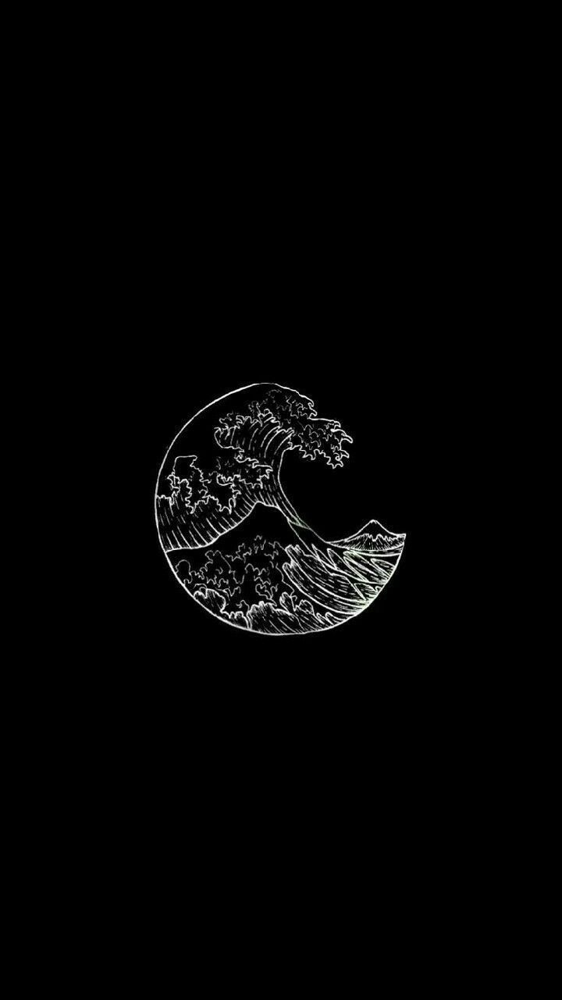

<a href="https://picsum.photos/" target="_blank" id="tepe">PICSUM</a>
<br>
<a href="#dip">Alt kısma git</a>
<br>
<a href="difpage.html">2. Sayfaya Geç</a>
<br>

<br>

<br>


<h2 id="dip">SON</h2>
<a href="#tepe">Üste git</a>